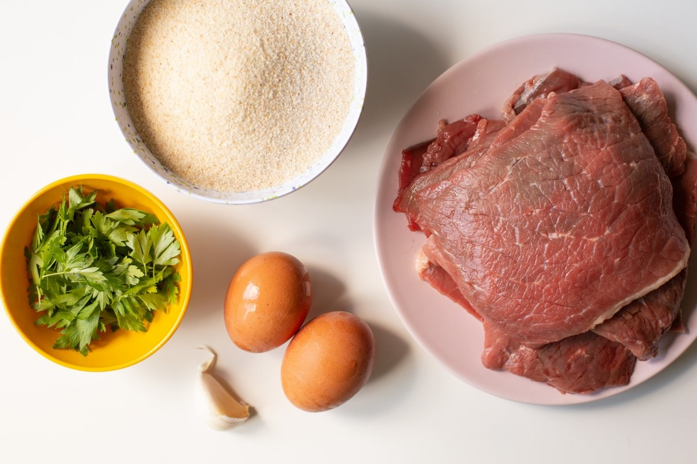

Milanesas de carne vacuna
Ir al pie de pagina
Ingredientes:
- 800 gramos carne de vaca
- 4 huevos
- 1 taza almidón de maíz Maizena (opcional)
- 1 litro aceite para freir
- 3 tazas pan rallado
- Perejil picado cantidad necesaria
- 1 diente ajo picado

Intrucciones:
- Limpiar la carne vacuna y reservar.
- En un bol batir levemente los huevos, la maizena, el perejil y el ajo picado. Reservar.
- Armado de las milanesas: Pasar la carne por la mezcla de maizena y huevo batido.
- Rebozar en el pan rallado y reservar en la heladera por 15 minutos aprox.
- Freír las milanesas en abúndate aceite caliente (180°C) hasta que resulten bien doradas.